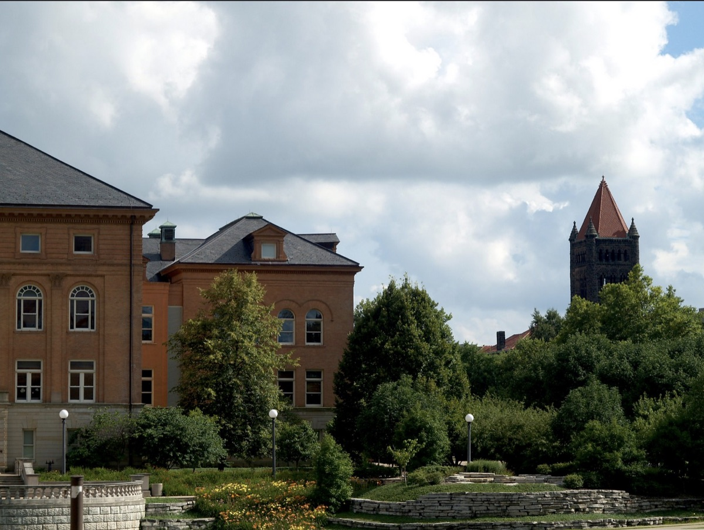

Library School

Two years ago, I sat unhappily in my office at a Chicago nonprofit and wondered what was next. I had spent the better part of my working life committed to social service endeavors, but the last few years had really put my idealism to the test. I decided to apply to the University of Illinois Graduate School of Library & Information Science and I'm happy to report that this was an excellent decision. Here are some highlights (I'm sure I will be adding to this list):
-I was lucky to receive one of a fleeting number of Graduate Assistantships where I worked with Professors Jim Evans and Joyce Wright to manage an extensive agricultural communication archive in exchange for reduced tuition.
-I had the opportunity to work as a reference librarian in a University of Illinois Library where I learned the valuable lesson that traditional reference work is not for me.
-I met dozens of fascinating people and new friends.
-I took 15 classes over four semesters with a number of excellent instructors. (Straight A's - too!)
Information Organization & AccessReference & Information ServicesAdministration & Use of Archival MaterialsRare Book & Special Collection LibrarianshipFoundations of Information Processing (Python Programming)Introduction to DatabasesE-GovernmentLibraries, Information & SocietyPracticum - Sears Taxonomy & User ExperienceGeographic Information SystemsApplied Business Research (Knowledge Management & Competitive Intelligence)Independent Study - User Experience RAW Photography (Art & Design Department)Interfaces to Information SystemsMetadata in Theory & Practice
-I spent my winter break last year working for the American Library Association where I had the opportunity to manage content strategy projects for two divisions.
-I attended the American Library Association Annual Conference in New Orleans, LA where I learned a lot and had an amazing time hanging out with Julia, Ron, Will & Jeanne.
-I ran the spring Illinois Marathon and beat my previous PR by over 13 minutes.
-I had the opportunity to spend the spring working with the Sears Taxonomy & User Experience department as a practicum student where I learned a ton and got to know the awesome Jenny B. better.
-I spent the summer drinking beers in the sunshine and discussing user experience research with Melinda and our great advisor Jenny E.
-I helped found the first Champaign-Urbana UX Book Club with Melinda, Meghan & Dan. I learned a lot from all of the members and it pushed me to read some great material.
-I got to take my first art class since middle school. (Thanks for taking a chance on me, Professor Scott!)
-I lived in a beautiful house with two great roommates and friends, Meghan and Maria.
-I started bike commuting for the first time since I lived in Portland.
-I enjoyed some incredible summer bike rides with library friends, thanks to the Bikes & Beers club Andrew founded.
-I made sure to visit Mirabelle Bakery and the Urbana Farmers Market frequently.
-Had an amazing time in Ann Arbor meeting the marvelous Beers and working in the incredible Janice B. Longone Culinary Archive over my spring break.
-Ran the Kentucky Bourbon Chase relay with Nick and nearly a dozen new, awesome friends.
Hooray! I'm officially a librarian!
(And I have a job - more on that soon!)